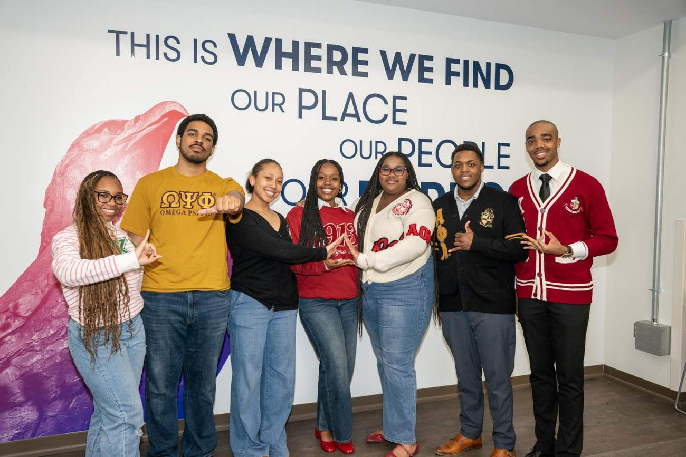

 BRIDGE the District
BRIDGE the DistrictOpportunity should not depend on who you already know.
An independent nonprofit in Washington, DC. Student-powered. Institutionally grounded. Built to last.

BRIDGE the DistrictAn independent nonprofit in Washington, DC. Student-powered. Institutionally grounded. Built to last.